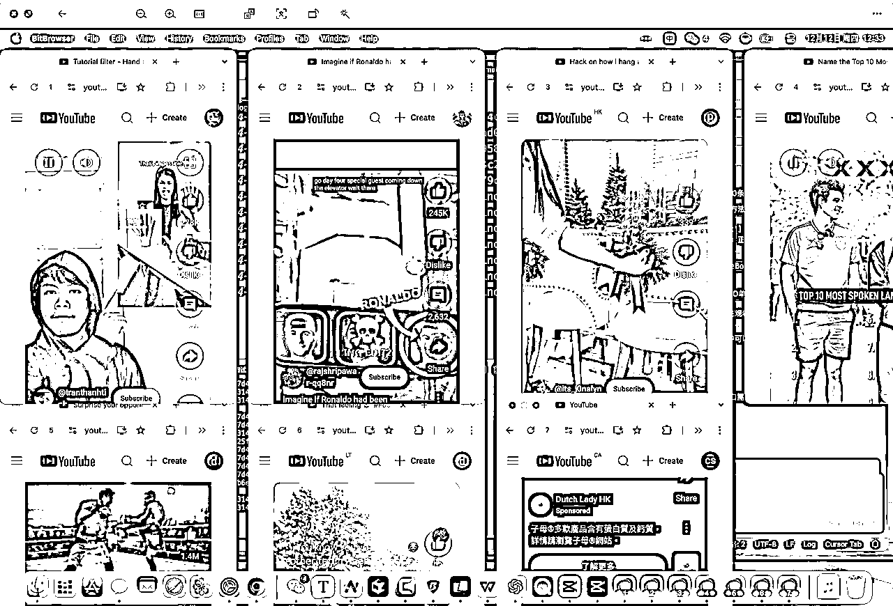
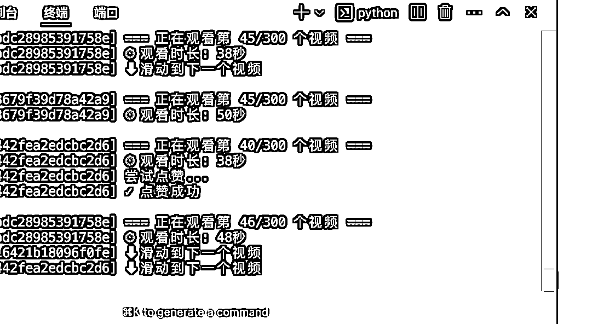
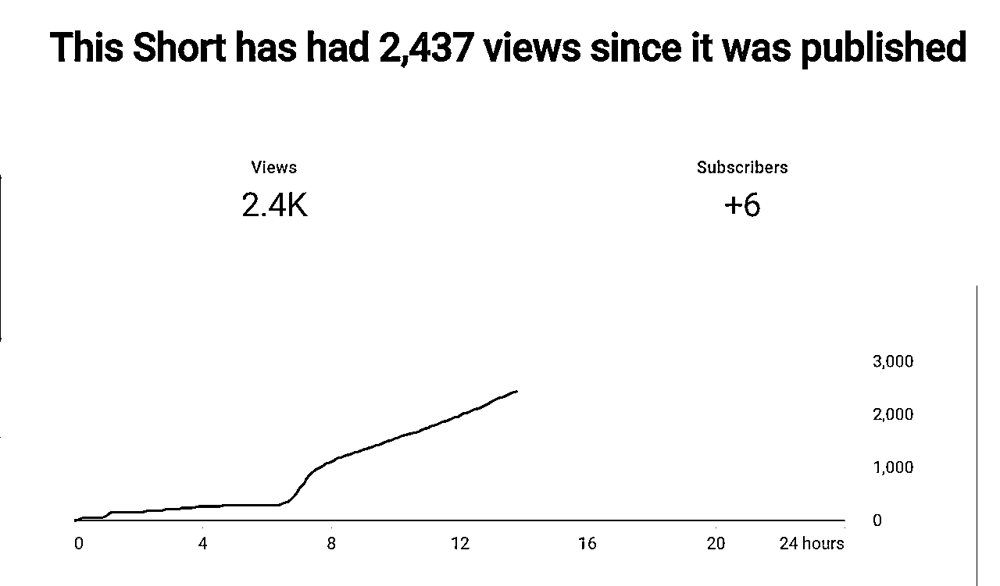
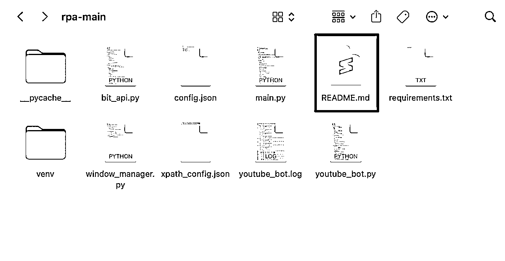
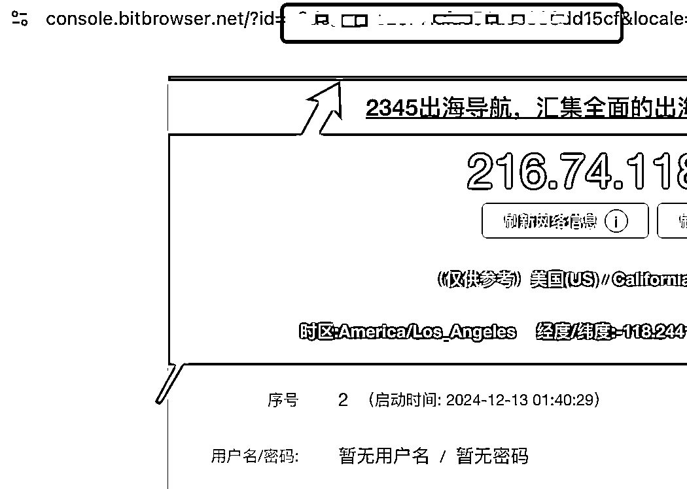
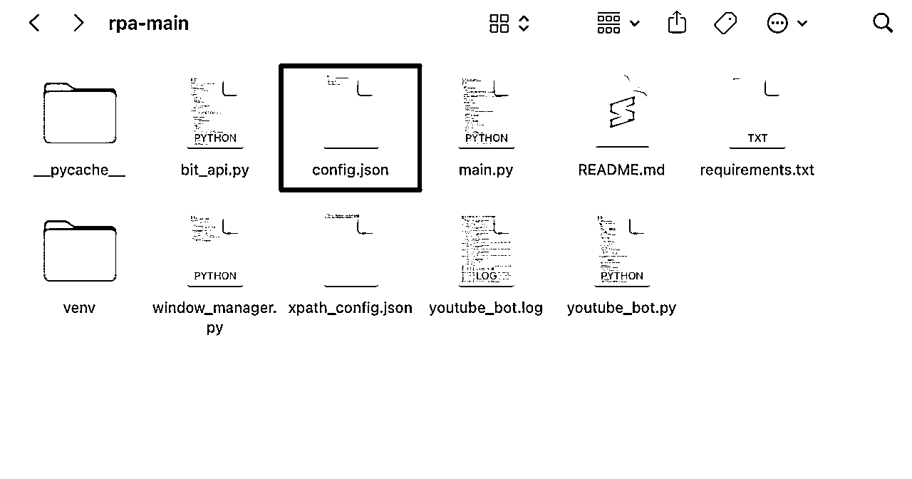
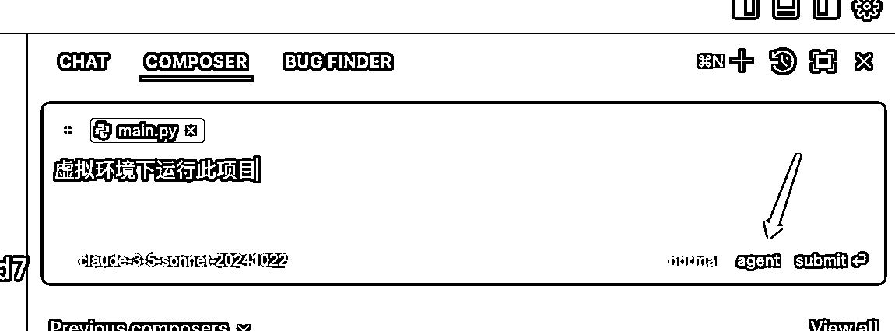
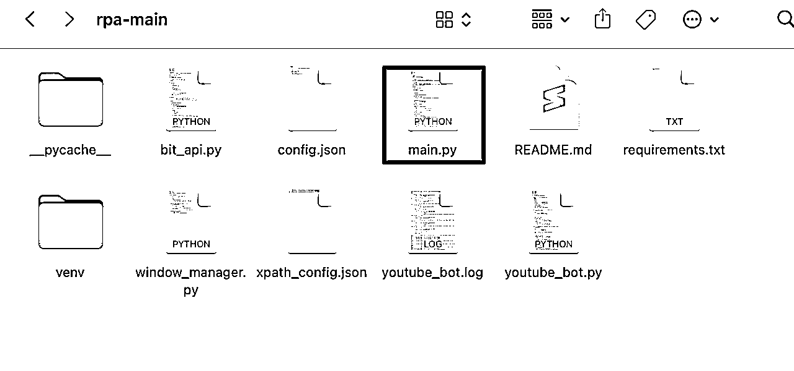
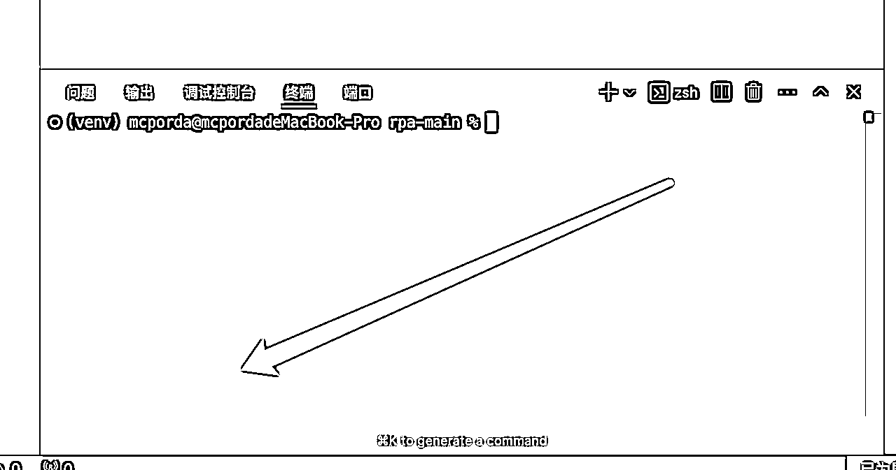
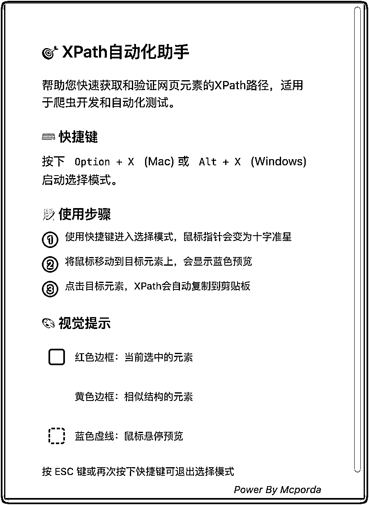

来源：https://ocn3v0tggugm.feishu.cn/docx/MuHFd18GroC5vox8Cp8cGOtDnNg
https://scys.com/activity/landing?id=4668&tabIndex=0




```json
{
"windows": [ // 浏览器窗口配置
{
"browser_id": "浏览器ID" // 每个窗口的唯一标识
}
],
"settings": {
"window_width": 400, // 窗口宽度（像素）
"window_height": 600, // 窗口高度（像素）
"watch_time_min": 5, // 最短观看时间（秒）
"watch_time_max": 30, // 最长观看时间（秒）
"like_probability": 0.3, // 点赞概率,30%
"subscribe_probability": 0.2,// 订阅概率,20%
"scroll_count": 50 // 观看视频数量
}
}
```
### 窗口大小设置
- `window_width`: 设置浏览器窗口和视口的宽度
- `window_height`: 设置浏览器窗口和视口的高度
- 建议设置合适的窗口大小以获得最佳的Shorts观看体验
- 推荐尺寸：
* 手机视图：400x600
* 平板视图：600x800
* 桌面视图：800x1000

（需要养几个号就打开多少个窗口）

{
"windows": [
{
"browser_id": "XXXXXXXXXXXXXXXXXXXXXXXXXXXXXXX"
},
{
"browser_id": "XXXXXXXXXXXXXXXXXXXXXXXXXXXXXX"
},
{
"browser_id": "XXXXXXXXXXXXXXXXXXXXXXXXXXXXXXX"
},
{
"browser_id": "XXXXXXXXXXXXXXXXXXXXXXXXXXXXXXXX"
},
{
"browser_id": "XXXXXXXXXXXXXXXXXXXXXXXXXXXXXXX"
},
{
"browser_id": "XXXXXXXXXXXXXXXXXXXXXXXXXXXXX"
},
{
"browser_id": "XXXXXXXXXXXXXXXXXXXXXXXXXXXXXX"
},
{
"browser_id": "XXXXXXXXXXXXXXXXXXXXXXXXXXXX"
}
],
"settings": {
"window_width": 400,
"window_height": 600,
"watch_time_min": 5,
"watch_time_max": 60,
"like_probability": 0.1,
"subscribe_probability": 0.05,
"scroll_count": 300 (这个是刷多少条停止)
}
}



可否一直使用:
{
"selectors": {
"like_button": "//*[@id=\"like-button\"]/yt-button-shape/label/button/yt-touch-feedback-shape/div",
"subscribe_button": "//*[@id=\"metapanel\"]/yt-reel-metapanel-view-model/div/yt-reel-channel-bar-view-model/div/yt-subscribe-button-view-model/yt-animated-action/div/div/button/yt-touch-feedback-shape/div/div",
"subscribe_text": "//*[@id=\"metapanel\"]/yt-reel-metapanel-view-model/div[1]/yt-reel-channel-bar-view-model/div[1]/yt-subscribe-button-view-model/yt-animated-action/div/div/button/div/text()"
}
}

这是我写的一个Chrome浏览器插件,按下快捷键,点击选择你要的元素,即可快速复制xpath,粘贴给Cursor说清楚这是哪个功能的xpath,它会自动添加你要的功能.
链接：https://pan.quark.cn/s/4d734d76fafc
补档：https://pan.quark.cn/s/43872fdad098